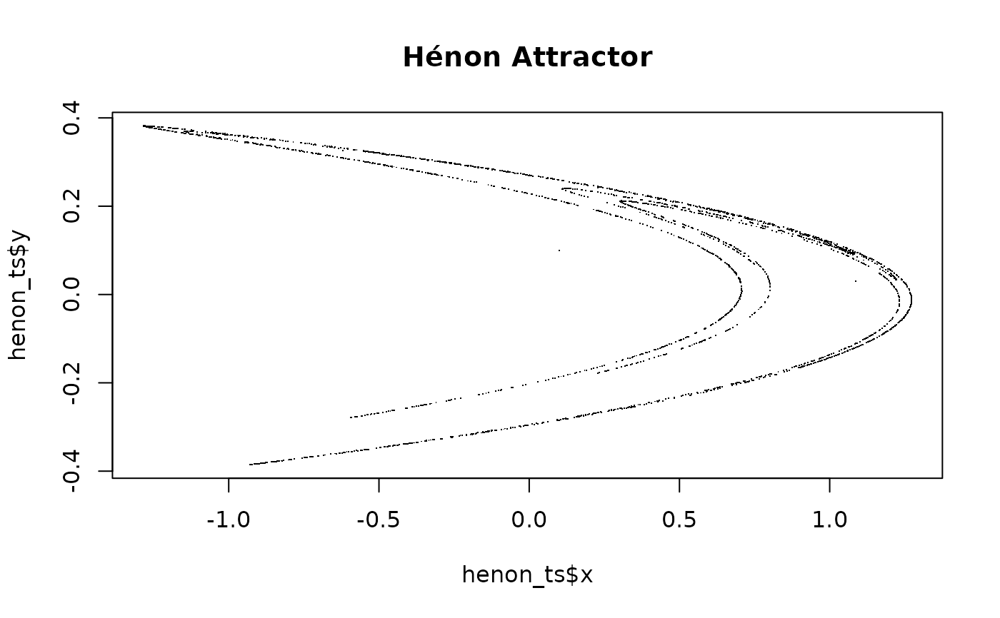
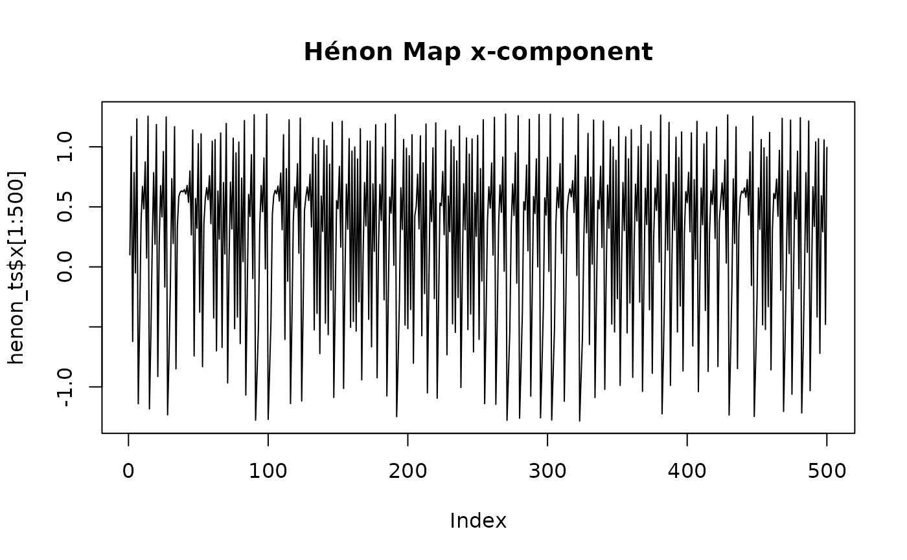

A two-dimensional time series generated from the Hénon map with parameters
a = 1.4 and b = 0.3, demonstrating chaotic attractor behavior.
A data frame with 3000 rows and 2 variables:
- x
x-coordinate of the trajectory
- y
y-coordinate of the trajectory
Source
Generated using simulate_henon_map(n = 3000, a = 1.4, b = 0.3, x0 = 0.1, y0 = 0.1)
Details
Generated using the Hénon map equations:
x[n+1] = 1 - a * x[n]^2 + y[n]
y[n+1] = b * x[n]
with a = 1.4, b = 0.3, and initial conditions (x_0, y_0) = (0.1, 0.1).
Examples
data(henon_ts)
plot(henon_ts$x, henon_ts$y, pch = ".", main = "Hénon Attractor")

plot(henon_ts$x[1:500], type = "l", main = "Hénon Map x-component")
